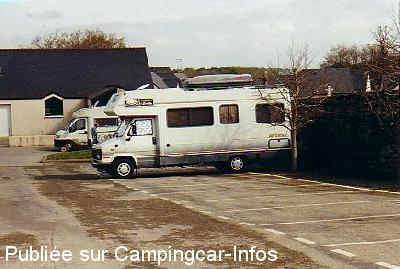

APN = Parking toléré jour/nuit de :
LARMOR BADEN
(N° 779)
Accès/adresse :
Rue d'Auray, D316
56870 LARMOR BADEN
56870 LARMOR BADEN
Latitude : (Nord) 47.58816° Décimaux ou 47° 35′ 17′′
Longitude : (Ouest) -2.89859° Décimaux ou -2° 53′ 54′′
Tarif : Gratuit
Services :
Autres informations :
3 emplacements
Au centre du bourg, à côté du cimetière.
A 500m de la plage et du port.
Pêche autorisée.
Ici c'est le rendez-vous des pêcheurs

Le 10/04/2003 par Nitrox35
de
dubs
le 05/05/2015 :
De passage le 5 mai 2015 il n y a plus que 3 emplacements et non 8
De passage le 5 mai 2015 il n y a plus que 3 emplacements et non 8
de
PG
le 17/07/2014 :
de passage en juin 2014, les emplacements sont trop court pour des véhicules de + de m, nous avons passé 2 nuits très calme sur l'ancien terrain de foot converti en P qui se trouve derrière la halte garderie
de passage en juin 2014, les emplacements sont trop court pour des véhicules de + de m, nous avons passé 2 nuits très calme sur l'ancien terrain de foot converti en P qui se trouve derrière la halte garderie
de
TITITE35
le 29/08/2011 :
Nous y sommes passé le 22 Aout .cette aire n'a rien d'une aire de parking camping-car :
places trés petites
bordure de route
en pente
4 places maxi
Nous sommes nous aussi allé passer la nuit sur le terrain herbeux situé 20 métres avant au carrefour
Nous etions 6 camping-cars
Nous y sommes passé le 22 Aout .cette aire n'a rien d'une aire de parking camping-car :
places trés petites
bordure de route
en pente
4 places maxi
Nous sommes nous aussi allé passer la nuit sur le terrain herbeux situé 20 métres avant au carrefour
Nous etions 6 camping-cars
de
GES
le 26/08/2008 :
Aire très petite, mais nous nous sommes mis dans un pré à proximité de l'aire. Nous étions 8 CC.
Aire très petite, mais nous nous sommes mis dans un pré à proximité de l'aire. Nous étions 8 CC.